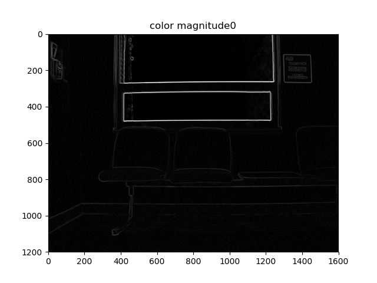
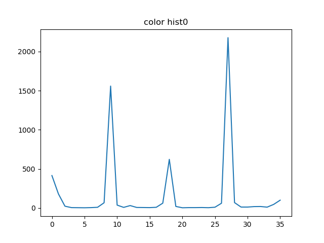

The code for color and grayscale intersection and chi-square calculation of the 99 images is below. It also contains Eigen values and eigen vectors code.
Assignment3the first source image is
the first source image's x-direction Sobel result is
the first source image's y-direction Sobel result is
the first source image's magnitude Sobel result is
the first source image's Canny edge detector histogram is
the second source image is
the second source image's x-direction Sobel result is
the second source image's y-direction Sobel result is
the second source image's magnitude Sobel result is
the second source image's Canny edge detector histogram is
the third source image is
the third source image's x-direction Sobel result is
the third source image's y-direction Sobel result is
the third source image's magnitude Sobel result is
the third source image's Canny edge detector histogram is
the fourth source image is
the fourth source image's x-direction Sobel result is
the fourth source image's y-direction Sobel result is
the fourth source image's magnitude Sobel result is
the fourth source image's Canny edge detector histogram is

the first source image is
the first source image's x-direction Sobel result is
the first source image's y-direction Sobel result is
the first source image's magnitude Sobel result is
the first source image's Canny edge detector histogram is
the first source image's eigen edge detector histogram is(applied non-maxima supression)
the first source image's Eigen edge detector result is(applied non-maxima supression)
the second source image is
the second source image's x-direction Sobel result is
the second source image's y-direction Sobel result is
the second source image's magnitude Sobel result is
the second source image's Canny edge detector histogram is
the second source image's eigen edge detector histogram is(applied non-maxima supression)
the second source image's Eigen edge detector result is(applied non-maxima supression)
the third source image is
the third source image's x-direction Sobel result is
the third source image's y-direction Sobel result is
the third source image's magnitude Sobel result is
the third source image's Canny edge detector histogram is
the third source image's eigen edge detector histogram is(applied non-maxima supression)
the third source image's Eigen edge detector result is(applied non-maxima supression)
the fourth source image is

the fourth source image's x-direction Sobel result is
the fourth source image's y-direction Sobel result is
the fourth source image's magnitude Sobel result is
the fourth source image's Canny edge detector histogram is
the fourth source image's eigen edge detector histogram is(applied non-maxima supression)
the fourth source image's Eigen edge detector result is(applied non-maxima supression)
the grayscale intersection image of the 99 images is
the grayscale chi square image of the 99 images is
the color intersection image of the 99 images is
the color chi square image of the 99 images is